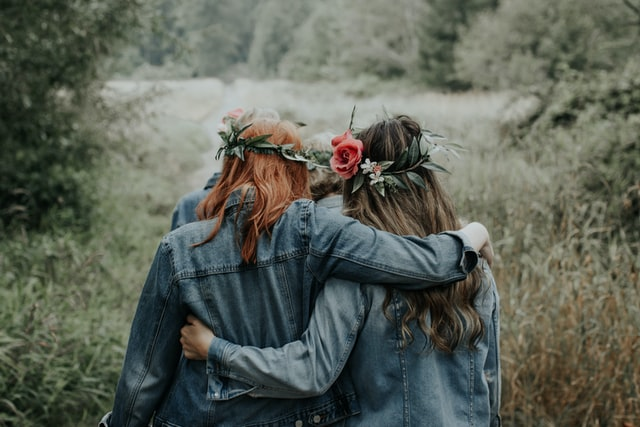
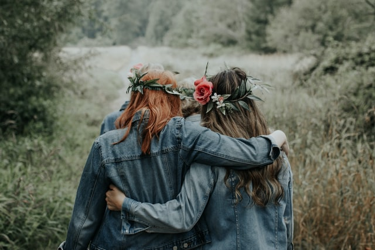

Flower Crowns
Wreath
Where flower crowns tradition come from.
A wreath worn for purpose of attire is a headdress made of leaves, grasses, flowers or branches. It is typically worn in festive occasions and on holy days and has a long history and association with ancient pageants and ceremonies. Outside occasional use, the wreath can also be used as a crown, or a mark of honour. The wreath most often has an annular geometric construction.

Wearing a wreath may have also had a mediating role by helping the wearer get closer to a specific deity.Wreaths were also used to decorate the hermae, stone pillars surmounted with the head of a god or distinguished mortal.In Christianity, the wreath represents the resurrection of Christ and therefore eternal life, more appropriately the victory of life over death.
The crown of thorns was placed on the Head of Jesus at His execution by crucifixion and became a symbol of the Passion.
Articles: Olive wreath, Laurel wreath, and Diadem from Wikipedia: Rogić, D. (2012) Wreath

Ukraine
Atradition of the Ukrainian wreath,a headdress made of leaves, flowers and branches worn by girls and young unmarried women, dates back to the old Slavic customs that predate the Christianization of Rus. The flower wreath remains a part of the Ukrainian national costume and is worn on festive occasions and on holy days.
Articles: Grass crown and Civic crown from Wikipedia : O.P.Tracz, 1999
Polynesia
Floral wreaths and garlands known as lei (Hawaii) are ubiquitous in Polynesia as both ornamental attire and gifts representative of affection or respect. Worn by men and women around the neck or around the head and commonly fashioned of flowers, leaves, vines and plant fiber.


Lei is any series of objects strung together with the intent to be worn. Lei of various styles are given as gifts to honour people throughout the Pacific, being presented, for example, to visiting dignitaries, graduates, or to loved ones who are departing. Lei gained popularity in the United States due to the common practice of presenting one to arriving or leaving tourists in Hawai'i.
Article:Wikipedia
Indigenous peoples of the Americas
Wreaths are part of the culture and legends of indigenous peoples of the Americas. The Cheyenne people wore wreaths during sacred ceremonies, rituals, dances and songs and head wreaths were usually made from willow, cottonwood or sage.
Article:Wikipedia : Grinnell, George Bird (1962). The Cheyenne Indians
Modern Wreaths

 

Wreaths have resurged in popularity in the 21st century. Flower crowns, or "crowns of love", are popular at outdoor music festivals such as Coachella. Variants made with artificial flowers can be purchased.
Article:Wikipedia :Duan, Noel. "How the Flower Crown Became the It-Accessory of Coachella"Yahoo News. Retrieved 26 April 2017.
All articles are presented by Wreath(attire) : wikipedia